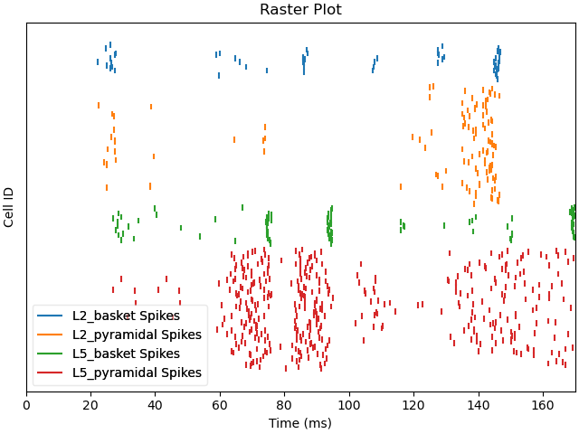
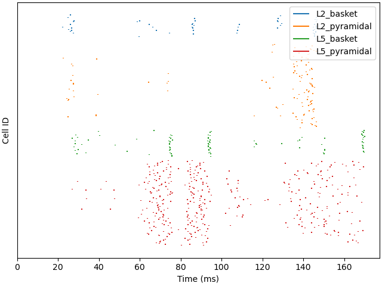

Note
Click here to download the full example code or to run this example in your browser via Binder
01. Plot firing pattern¶
This example demonstrates how to inspect the firing pattern of cells in the HNN model.
# Authors: Mainak Jas <mjas@harvard.mgh.edu>
# Nick Tolley <nick nicholas_tolley@brown.edu>
import os.path as op
import tempfile
Let us import hnn_core.
import hnn_core
from hnn_core import read_spikes, jones_2009_model, simulate_dipole
Now let’s build the network. We have used the same weights as in the evoked example.
import matplotlib.pyplot as plt
net = jones_2009_model()
net does not have any driving inputs and only defines the local network
connectivity. Let us go ahead and first add a distal evoked drive.
We need to define the AMPA and NMDA weights for the connections. An
“evoked drive” defines inputs that are normally distributed with a certain
mean and standard deviation.
weights_ampa_d1 = {'L2_basket': 0.006562, 'L2_pyramidal': 7e-6,
'L5_pyramidal': 0.142300}
weights_nmda_d1 = {'L2_basket': 0.019482, 'L2_pyramidal': 0.004317,
'L5_pyramidal': 0.080074}
synaptic_delays_d1 = {'L2_basket': 0.1, 'L2_pyramidal': 0.1,
'L5_pyramidal': 0.1}
net.add_evoked_drive(
'evdist1', mu=63.53, sigma=3.85, numspikes=1, weights_ampa=weights_ampa_d1,
weights_nmda=weights_nmda_d1, location='distal',
synaptic_delays=synaptic_delays_d1, event_seed=4)
The reason it is called an “evoked drive” is it can be used to simulate waveforms resembling evoked responses. Here, we show how to do it with two proximal drives which drive current up the dendrite and one distal drive which drives current down the dendrite producing the negative deflection.
weights_ampa_p1 = {'L2_basket': 0.08831, 'L2_pyramidal': 0.01525,
'L5_basket': 0.19934, 'L5_pyramidal': 0.00865}
synaptic_delays_prox = {'L2_basket': 0.1, 'L2_pyramidal': 0.1,
'L5_basket': 1., 'L5_pyramidal': 1.}
# all NMDA weights are zero; pass None explicitly
net.add_evoked_drive(
'evprox1', mu=26.61, sigma=2.47, numspikes=1, weights_ampa=weights_ampa_p1,
weights_nmda=None, location='proximal',
synaptic_delays=synaptic_delays_prox, event_seed=4)
Now we add the second proximal evoked drive and simulate the network dynamics with somatic voltage recordings enabled. Note: only AMPA weights differ from first.
weights_ampa_p2 = {'L2_basket': 0.000003, 'L2_pyramidal': 1.438840,
'L5_basket': 0.008958, 'L5_pyramidal': 0.684013}
# all NMDA weights are zero; omit weights_nmda (defaults to None)
net.add_evoked_drive(
'evprox2', mu=137.12, sigma=8.33, numspikes=1,
weights_ampa=weights_ampa_p2, location='proximal',
synaptic_delays=synaptic_delays_prox, event_seed=4)
dpls = simulate_dipole(net, tstop=170., record_vsoma=True)
Out:
joblib will run over 1 jobs
Building the NEURON model
[Done]
running trial 1 on 1 cores
Simulation time: 0.03 ms...
Simulation time: 10.0 ms...
Simulation time: 20.0 ms...
Simulation time: 30.0 ms...
Simulation time: 40.0 ms...
Simulation time: 50.0 ms...
Simulation time: 60.0 ms...
Simulation time: 70.0 ms...
Simulation time: 80.0 ms...
Simulation time: 90.0 ms...
Simulation time: 100.0 ms...
Simulation time: 110.0 ms...
Simulation time: 120.0 ms...
Simulation time: 130.0 ms...
Simulation time: 140.0 ms...
Simulation time: 150.0 ms...
Simulation time: 160.0 ms...
Here, we explain more details about the data structures and how they can
be used to better interpret the data. The cell IDs (gids) uniquely define
neurons in the network and are stored in the Network
object as a dictionary
gid_ranges = net.gid_ranges
print(net.gid_ranges)
Out:
{'L2_basket': range(0, 35), 'L2_pyramidal': range(35, 135), 'L5_basket': range(135, 170), 'L5_pyramidal': range(170, 270), 'evdist1': range(270, 540), 'evprox1': range(540, 810), 'evprox2': range(810, 1080)}
Simulated voltage in the soma is stored in CellResponse
as a dictionary. The CellResponse object stores data produced by individual
cells including spikes, somatic voltages and currents.
Out:
dict_keys([0, 1, 2, 3, 4, 5, 6, 7, 8, 9, 10, 11, 12, 13, 14, 15, 16, 17, 18, 19, 20, 21, 22, 23, 24, 25, 26, 27, 28, 29, 30, 31, 32, 33, 34, 35, 36, 37, 38, 39, 40, 41, 42, 43, 44, 45, 46, 47, 48, 49, 50, 51, 52, 53, 54, 55, 56, 57, 58, 59, 60, 61, 62, 63, 64, 65, 66, 67, 68, 69, 70, 71, 72, 73, 74, 75, 76, 77, 78, 79, 80, 81, 82, 83, 84, 85, 86, 87, 88, 89, 90, 91, 92, 93, 94, 95, 96, 97, 98, 99, 100, 101, 102, 103, 104, 105, 106, 107, 108, 109, 110, 111, 112, 113, 114, 115, 116, 117, 118, 119, 120, 121, 122, 123, 124, 125, 126, 127, 128, 129, 130, 131, 132, 133, 134, 135, 136, 137, 138, 139, 140, 141, 142, 143, 144, 145, 146, 147, 148, 149, 150, 151, 152, 153, 154, 155, 156, 157, 158, 159, 160, 161, 162, 163, 164, 165, 166, 167, 168, 169, 170, 171, 172, 173, 174, 175, 176, 177, 178, 179, 180, 181, 182, 183, 184, 185, 186, 187, 188, 189, 190, 191, 192, 193, 194, 195, 196, 197, 198, 199, 200, 201, 202, 203, 204, 205, 206, 207, 208, 209, 210, 211, 212, 213, 214, 215, 216, 217, 218, 219, 220, 221, 222, 223, 224, 225, 226, 227, 228, 229, 230, 231, 232, 233, 234, 235, 236, 237, 238, 239, 240, 241, 242, 243, 244, 245, 246, 247, 248, 249, 250, 251, 252, 253, 254, 255, 256, 257, 258, 259, 260, 261, 262, 263, 264, 265, 266, 267, 268, 269])
We can plot the firing pattern of individual cells by indexing with the gid
gid = 170
plt.figure(figsize=(4, 4), constrained_layout=True)
plt.plot(net.cell_response.times, vsoma[gid])
plt.title('%s (gid=%d)' % (net.gid_to_type(gid), gid))
plt.xlabel('Time (ms)')
plt.ylabel('Voltage (mV)')
plt.show()
Also, we can plot the spikes in the network and write them to text files. Note that we can use formatting syntax to specify the filename pattern with which each trial will be written (‘spk_1.txt’, ‘spk_2.txt, …). To read spikes back in, we can use wildcard expressions.
net.cell_response.plot_spikes_raster()
with tempfile.TemporaryDirectory() as tmp_dir_name:
net.cell_response.write(op.join(tmp_dir_name, 'spk_%d.txt'))
cell_response = read_spikes(op.join(tmp_dir_name, 'spk_*.txt'))
cell_response.plot_spikes_raster()
- 
- 
Out:
<Figure size 640x480 with 1 Axes>
We can additionally calculate the mean spike rates for each cell class by
specifying a time window with tstart and tstop.
all_rates = cell_response.mean_rates(tstart=0, tstop=170,
gid_ranges=net.gid_ranges,
mean_type='all')
trial_rates = cell_response.mean_rates(tstart=0, tstop=170,
gid_ranges=net.gid_ranges,
mean_type='trial')
print('Mean spike rates across trials:')
print(all_rates)
print('Mean spike rates for individual trials:')
print(trial_rates)
Out:
Mean spike rates across trials:
{'L2_basket': 9.243697478991596, 'L2_pyramidal': 6.705882352941176, 'L5_basket': 14.453781512605042, 'L5_pyramidal': 23.29411764705883}
Mean spike rates for individual trials:
{'L2_basket': [9.243697478991596], 'L2_pyramidal': [6.705882352941176], 'L5_basket': [14.453781512605042], 'L5_pyramidal': [23.29411764705883]}
Finally, we can plot the soma voltage along with the spiking activity with raster plots and histograms for the pyramidal cells.
fig, axes = plt.subplots(3, 1, figsize=(5, 7), sharex=True)
for idx in range(10): # only 10 cells per cell-type
gid = gid_ranges['L2_pyramidal'][idx]
axes[0].plot(net.cell_response.times, vsoma[gid], color='g')
gid = gid_ranges['L5_pyramidal'][idx]
axes[0].plot(net.cell_response.times, vsoma[gid], color='r')
net.cell_response.plot_spikes_raster(ax=axes[1])
net.cell_response.plot_spikes_hist(ax=axes[2],
spike_types=['L5_pyramidal',
'L2_pyramidal'])
Out:
<Figure size 500x700 with 3 Axes>
Total running time of the script: ( 0 minutes 58.299 seconds)